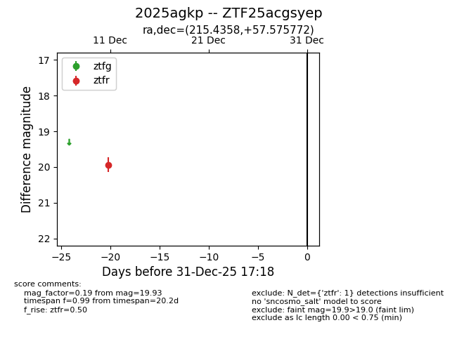
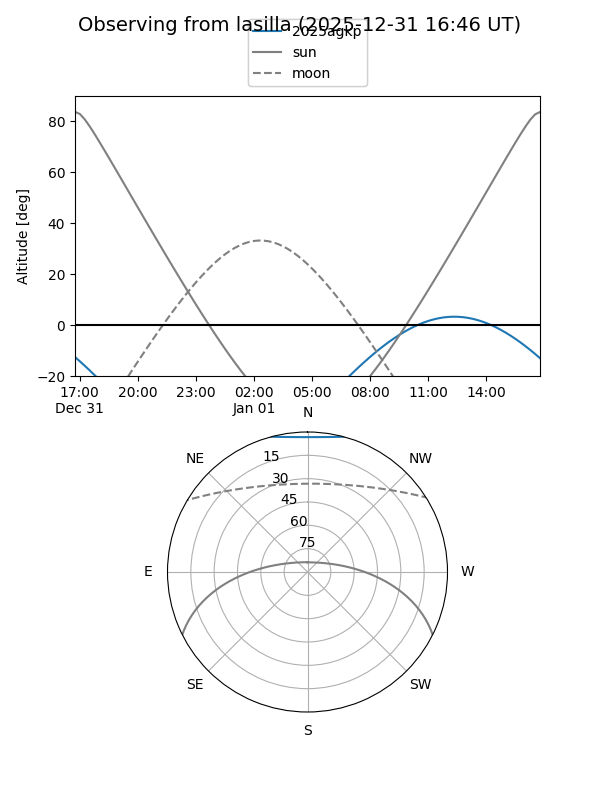
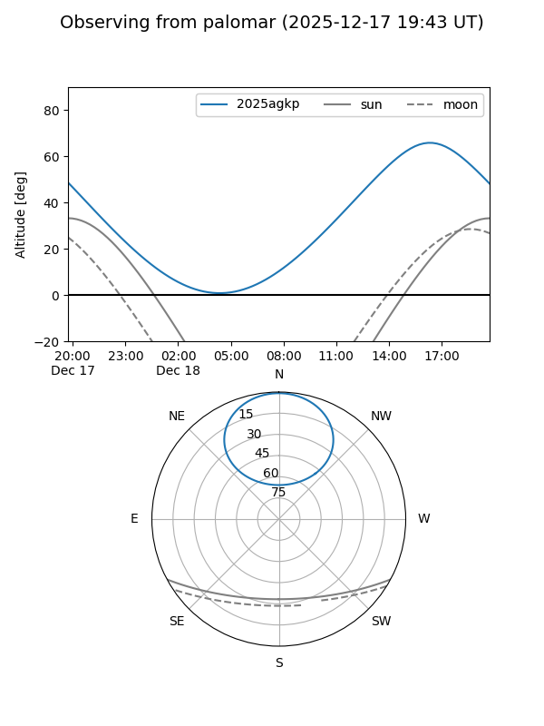

2025agkp
Target 2025agkp at 2025-12-31 16:59
Aliases and brokers:
FINK:
Lasair:
ALeRCE:
TNS:
YSE:
alt names
ZTF25acgsyep (ztf,fink_ztf)
2025agkp (tns,yse)
Coordinates:
equatorial (ra, dec) = 215.4358,+57.57577
equatorial (HMS+DMS) = 14:21:44.59,+57:34:32.78
galactic (l, b) = (101.5401,+55.64182)
Flags:
Photometry:
last ztfr=19.93
1 ztfr detections
Lightcurve

Visibility


Additional plots